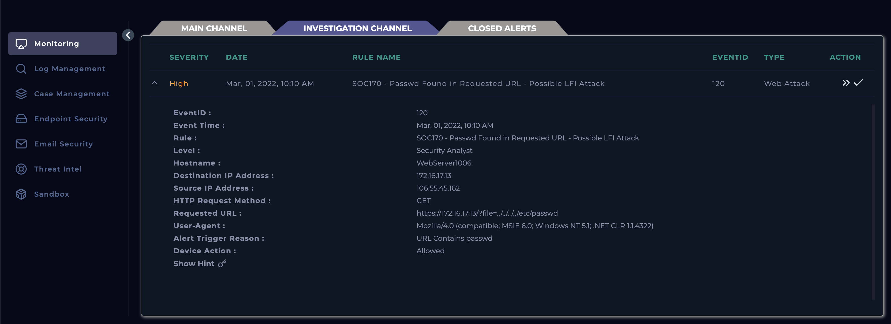
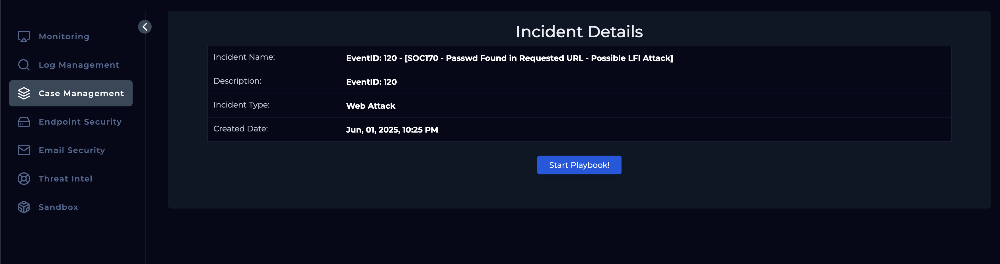
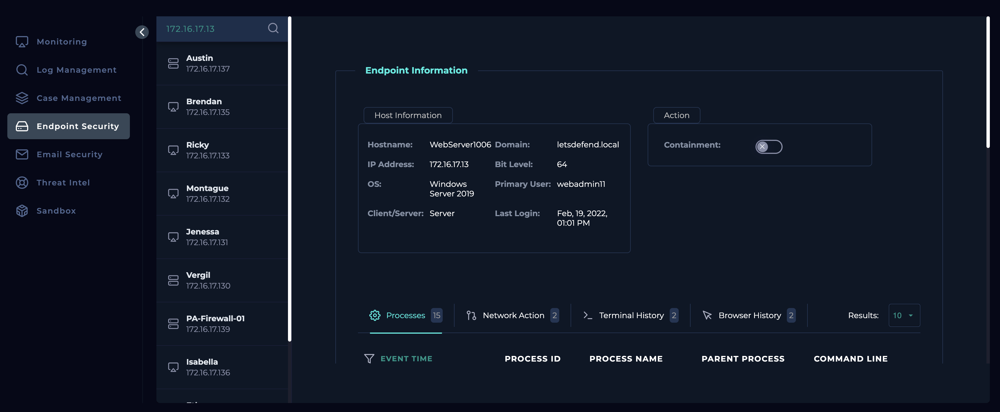
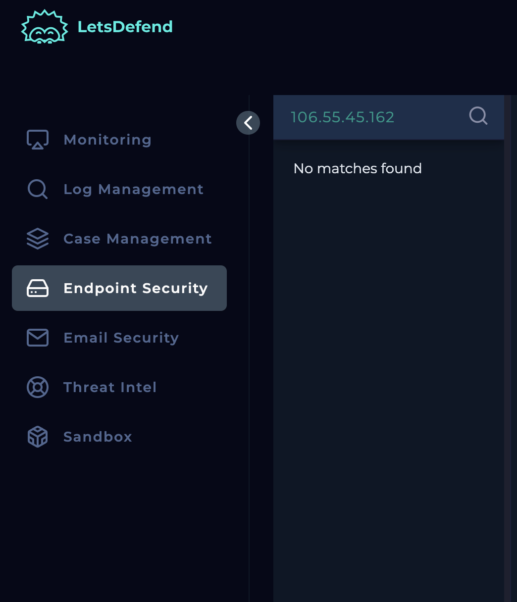
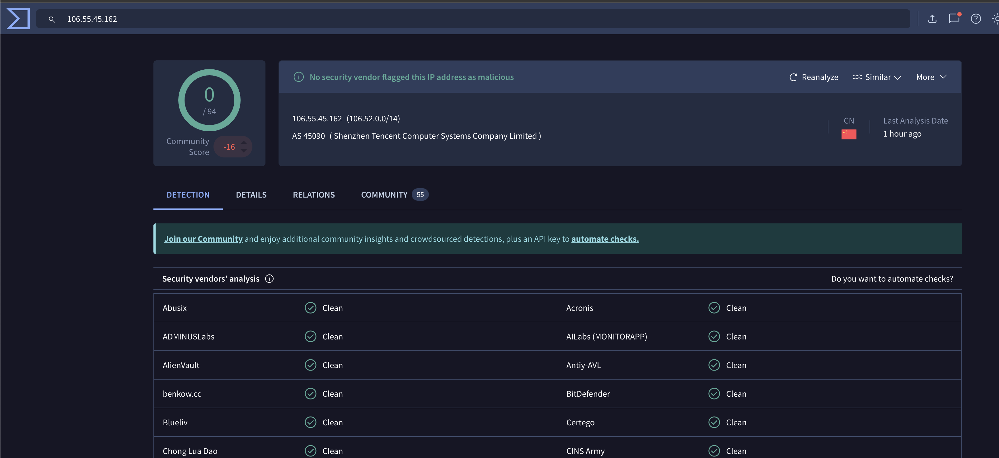
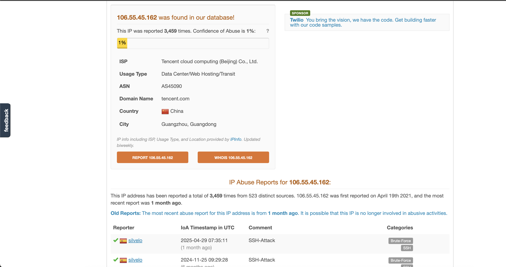
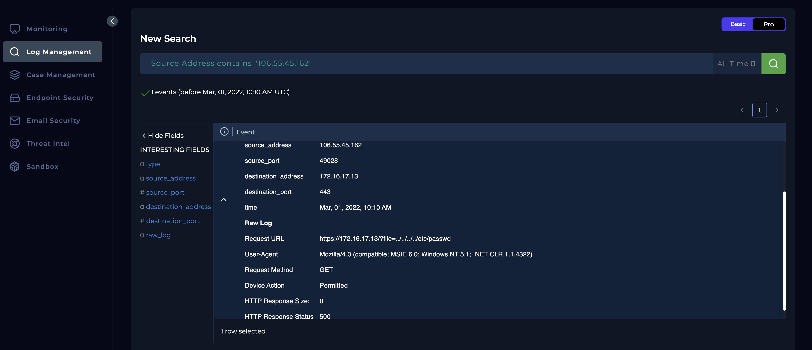
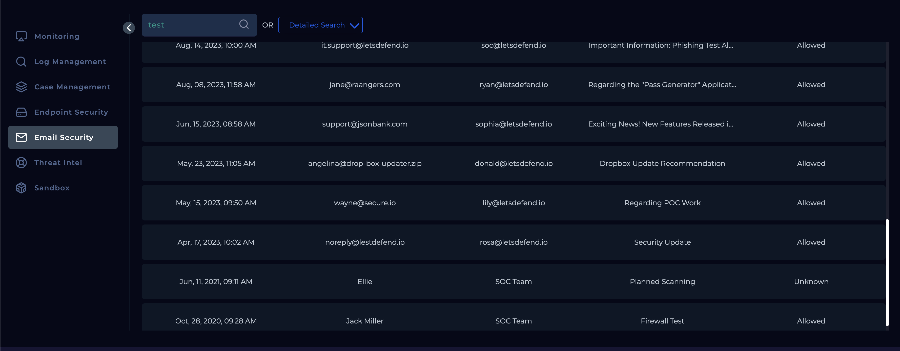

Objective
The purpose of this investigation is to analyze the alert generated under SOC170 - "Passwd Found in Requested URL - Possible LFI Attack." This includes conducting a thorough examination of the HTTP request logs to determine whether a Local File Inclusion (LFI) attempt was made, assessing the intent and potential impact of the payload involving access to sensitive system files (e.g., /etc/passwd), verifying if the attack was successful, and taking appropriate containment and mitigation measures to safeguard the affected system and prevent recurrence.
Investigation steps
Reviewed the alert generated to understand the date & time of event (01/03/2022 10.10am), the HTTP method used (GET), URL (https://172.16.17.13/?file=../../../../etc/passwd), Source IP (106.55.45.162), Destination IP (172.16.17.13), reason for alert, and device action (Allowed).

Upon reviewing, created a case to investigate the alert further and assign to myself to avoid anyone else from picking up. Started the playbook to ensure the correct steps are followed to ensure a structure way to investigating without cutting corners.

Checked the Destination and Source IP address against Endpoint Security module to identify whether these devices are internal or external. The destination IP address (172.16.17.13) seems to belong to an internal Windows webserver which was last logged on Feb, 19, 2022, 01:01 PM. However, the source IP address (106.55.45.162) does not seem to belong to the internal network therefore would require further digging in later stages to understand whereabouts of this IP. Direction of traffic being internet to company.


Completed further checks on the Source IP address using Virus Total and AbuseIPDB. According to Virus Total, there has been no reporting against this IP and this IP seems to originate from China. On the other hand, AbuseIPDB flags the IP address as malicious due to a high number of reports made against the IP for commonly SSH attacks. The domain name appears to be tencent.com and ISP being Tencent cloud computing.


Reviewed the Log Management module by filtering by the source IP address in the alert, resulting in just one record. Upon reviewing the record, I could understand a GET request was sent from the agent through port 443 using the URL of ‘https://172.16.17.13/?file=../../../../etc/passwd’ which indicates the typical format of a LFI attack. However, the Response size shows that the server provided no response to the request and the HTTP response status was 500 meaning internal server error, which may be due to being unable to find such a directory path.

Reviewed the Email Security module to see if this was a planned penetration testing that was informed across the organisation, but there was no email exchange found eliminating the chances of this being a test.

Analysis
On March 1, 2022, at 10:10 AM, an alert titled SOC170 - "Passwd Found in Requested URL - Possible LFI Attack" was triggered, highlighting a potential Local File Inclusion (LFI) attempt targeting an internal web server. The alert was generated following a GET request from source IP 106.55.45.162 (an external device) to destination IP 172.16.17.13, attempting to access the /etc/passwd file via the URL https://172.16.17.13/?file=../../../../etc/passwd. A case was immediately created, and the investigation initiated using the structured playbook process. Endpoint analysis confirmed the destination IP is an internal Windows web server, while the source IP, originating from China and hosted by Tencent Cloud, was flagged on AbuseIPDB for historical malicious activity including SSH-based attacks. Log review showed only one relevant record, with a HTTP 500 error response and no data returned—indicating that although the request format matched an LFI attempt, the attack was likely unsuccessful due to the server’s failure to locate the specified path. Furthermore, no prior internal communications suggested this was part of any sanctioned security test. Given the findings, the incident was determined to be an attempted but unsuccessful LFI attack, and appropriate documentation and closure actions were taken.
Key learnings
- Effective Use of Log Analysis Tools The importance of leveraging centralized log management to trace HTTP requests and determine the nature and result of a suspected attack was reinforced. The presence of a single suspicious request and a 500 Internal Server Error response played a crucial role in concluding the attack was unsuccessful.
- Threat Intelligence Validation Validating external IPs using tools like VirusTotal and AbuseIPDB proved essential. Although VirusTotal showed no prior activity, AbuseIPDB provided historical context, identifying the IP as potentially hostile based on past incidents.
- Structured Investigation Workflow Following a step-by-step incident response playbook ensured no aspect of the investigation was overlooked, from confirming endpoint ownership to ruling out internal testing activity via Email Security module.
- Recognizing LFI Patterns This case highlighted the importance of recognizing typical indicators of a Local File Inclusion (LFI) attempt, such as directory traversal in URL patterns (e.g., ../../../../etc/passwd), and reinforced how these can be detected and blocked before causing harm.
- Importance of Defensive Server Configuration The internal server’s response behavior—returning a 500 error rather than the targeted file—demonstrated the effectiveness of hardened server configurations in mitigating exploitation attempts.